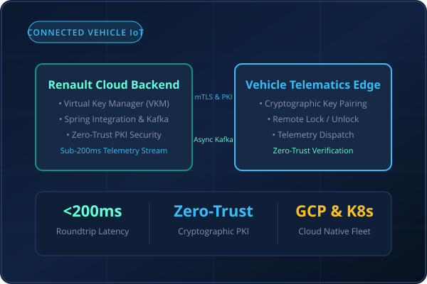

Mission-critical cloud backend services enabling cryptographic digital key exchange and real-time remote vehicle operations across Renault's connected vehicle fleet.
Modern connected vehicle platforms require sub-second remote operations (lock/unlock, engine authorization, telemetry dispatch) while operating under unreliable cellular connectivity and severe zero-trust security constraints. Synchronous HTTP polling would saturate cloud resources and fail catastrophically in spotty network scenarios, while naive key exchange protocols expose vehicles to relay and replay attacks.
Architected an event-driven microservices backend leveraging Spring Integration and Apache Kafka to decouple high-frequency vehicle telemetry ingestion from stateful command dispatch. Implemented zero-trust PKI cryptographic signature verification and dynamic asymmetric key exchange, ensuring tamper-proof authorization and sustaining sub-200ms roundtrips.
Event-driven Kafka streaming eliminates polling overhead, guaranteeing real-time response times for remote vehicle actions.
End-to-end asymmetric key exchange and cryptographic token rotation prevents relay attacks across distributed IoT endpoints.
Containerized on Google Kubernetes Engine (GKE) with multi-zone redundancy, automated health probes, and log-based tracing.
High-level architecture illustrating cloud-to-vehicle cryptographic handshakes and event streaming pipelines
